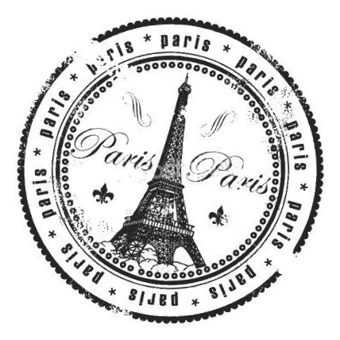

Flying and the Hotel
Today was "Day One" of the trip. We met atthe school to have our bags checked and to board the plane. We checked in our bags and got our seats. I meant to sit with Emily on the plane, but ended up sitting with Josh as the way the seats were assigned. At the airport, I got a sandwich and an overpriced smoothie. I ordered a flavor but I think they gave me blackberry by mistake. But that's okay!
A girl named Madison complimented me on my red boots. On the plane, Emily, who has only a few seats away, found a chat room we could use to talk on the plane. It was fun to play around with it. I barely slept on the plane, but despite the lack of sleep, I was super excited. We had landed in Paris!
We landed in Paris! I shared a room with Emily. It was small, but I liked it. It was rather cute and cozy. Our hotel was right by the Arc de Triomph, a McDonald's, and not too far from the Champs Elysee.
Lunch on the Champs Elysse
We went to the Champs Elysee, but we were only allowed to go between an area of about 150m. We saw a bunch of "Brioche Dorees" and throughout the trip made a game of counting how many we could find throught France. For lunch we ate at Paul's. For my first time ordering food in french... I kind of failed... I messed up my order twice, but ended up with a tuna sandwich that was really good and had really, really good bread.
As we were eating lunch outside, Kyra kept feeding the pigeons. One approached her and was missing part of a toe. We named it Paul and eventually that was the term we used for french pigeons. More and more pigeons kept following us. We all (especially Josh) kept telling her "KYRA NOO STOP!" She ended up throwing half a macaron at them! We eventually had to run away and relocate.
Shopping and Waffles
After lunch, we checked out some of the shops. We saw really nice music boxes and expensive macarons (we kept going back ad forth between shops to figure out which had the best deal). We also saw a shop that sold weapons like butterfly knives, brass knuckles, and food containers to hide your shady items in. Kyra walked into the shop just as Josh read a sign that said INTERDIT DES MINORS in all caps and bright, red letters. We all laughed and made funny faces in front of the shop.
We wanted to cross a street and couldn't find an adult. When we got to the hotel, we learned that the reason we couldn't find the chaperones (our "parents") was that they had abandonned the designated area for waffles. We freshened up at thee hotel and Josh, Emily, and I watched the Olympics on our TV while the others took naps in their rooms
Dinner
We went to a French restaurant for dinner. It was Friday so I, and the other vegetarians, had a salad with a really good vinegarette. Everyone else got ham and cheese quiche. For dessert there was chocolate mousse. Helena, our tour guide, said that these shared dinners had limited options so that we would all be "adventurous" and be coaxed into eating the local cuisine.
We were given glass wine glasses for our water and Sarah talked about how some people could use their finger to make a ringing noise. Josh did it, and we all quickly said "Stop no or else everyone else is goin to do it, too!" Soon enough, all throughout dinner, and sporadically during the other dinners of the trip, we would head other people making the noise. Whenever it happened we all looked at Josh and said "LOOK WHAT YOU'VE DONE!!" and Josh would say "Alright, who is it!?"
Our Rise to the Top
After dinner, we used the metro to go to the Eiffel tower! We were given passes to go to the third floor. All the kids from our school ran directly underneath the tower and took pictures from the bottom up. Kyra lay down on the ground "for the perfect photo." We all laughed and Josh tokk a picture of her on the ground.
We went through security and found out that we went to the wrong entrance. Rather than going to the entrance with the elevator, which is the one our passes granted us access to, we went to the entrance with the "Escaliers/Stairs" sign. We all face palmed and called ourselves dumb butts. We joke about being in class and knowing what "escaliers" meant because of this experience. The elevator was reallly packed and a really good place to pickpocket people. However, once we got to the top, we realized it was worth it.
Aliens in Paris!
At the top of the Eiffel tower, we saw a really beautiful view. We also saw a strage alien light beam we would reference through out the trip. Anika and I saw a toddler standing on the railing and holding onto the fence part. We agreed "Thaaaattt... can't be safe..." We also saw a wax scene and a love lock at the top.
As beautiful as it may be... The top was freezing! After a visit to the giftshop, we had to wait quite a while for the elevator down to come. We complained to Anika that it probably would've been faster if we had taken the stairs instead. While we waited, Emi whipped out some seaweed packets and Josh complained about having to pee. The Eiffel tower is supposed to light up periodically, but we missed every time. It got to the point where we decided it to be very ironic, statistically impossible, and running complaint/BRUH/joke. Once we finally got to the bottom (we were a bit late), we took the metro back to the hotel.